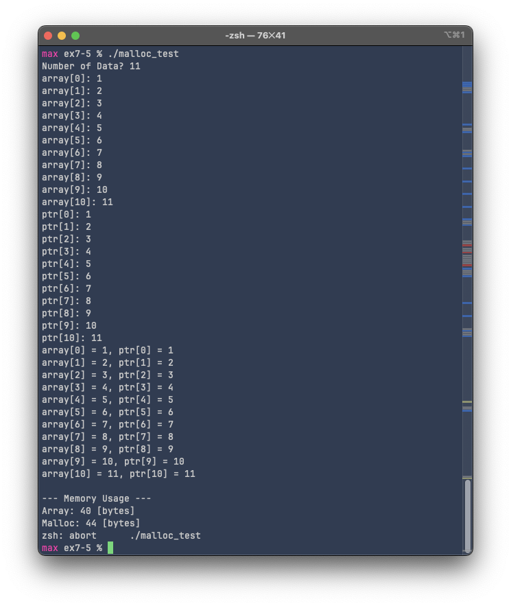

Exercise 7-5: malloc_test.c
Maximilian Fernaldy - C2TB1702
Exercise 7-5 deals with a very important aspect of the C language and low-level programming as a whole: dynamic memory allocation. Complete control over memory allocation and resource management is what makes C one of the fastest and most efficient programming languages on earth. However, like we've seen in the previous exercise, it can also be a problem when certain problems like memory leaks and segmentation faults go undetected. In exercise 5, we will encounter a similar problem, but instead of reading from invalid memory locations, we will be writing into them instead.
What malloc_test.c does
In malloc.c, there are two arrays initialized.
int array[10];
int *ptr; // even though it doesn't look like it, ptr can be treated like an array.
// This is because we can treat it as the pointer to the first element of an array.
// After allocating memory, we can then assign values directly with subscripts.
Like the comment says, even though we're syntactically declaring a pointer instead of an array, in C, we can treat a pointer as the name of an array, because its value without subscripts is just the memory address of an array (i.e., ptr is equal to &ptr[0]). However, there is a stark difference between the two methods. When we declare an array with the subscript, the square brackets have to be filled in with the array size. Alternatively, it can be left blank, but it has to be initialized in the same line:
int array[]; // ERROR: incomplete type.
int array[] = {1,2,3,4}; // acceptable.
int array[10]; // acceptable.
This is less than ideal, or rather, unusable, if we want to create an array that we don't know the size yet (in other words, array size is only known at runtime instead of compile time). To dynamically allocate memory for an array, we need to use the malloc() function, the documentation of which can be found here. Essentially, malloc() reserves storage blocks, or in other words, allocates memory for our program. It takes the size of the storage block to reserve, in bytes, as its argument. Conveniently, we can use the return value of sizeof() as the argument for malloc()—the two functions are very frequently seen in conjunction with each other, as different architectures use different sizes for different data types. After reservation, we can then populate the memory address with whatever we see fit. In this example, we are simply going to use it to populate an array, but in more advanced applications, it can also be used to allocate memory for implementing data structures like linked lists, binary trees, or other structures with unknowable size at compile time.
After initializing the arrays, with array[], we can directly start populating it with scanf(), but notice that we need to ask for num to populate ptr[]. This is because num is needed to use malloc(). We multiply num by the size of an integer with sizeof(int)*num and pass that as an argument for malloc(). This will allocate memory according to how many integers need to be inside the array. Integers typically need 4 bytes, so for 10 integers, for example, we need bytes. Here, sizeof(int) returns 4 and the user inputs 10 for num. If the user enters something like 20, then obviously malloc() will allocate 80 bytes instead.
printf("Number of Data? ");
scanf("%d", &num);
for (int i = 0; i < num; i++) {
printf("array[%d]: ", i);
scanf("%d", &array[i]);
}
ptr = malloc(sizeof(int)*num);
if (ptr == NULL) {
printf("memory allocation error.\n");
return 1;
}
for (int i = 0; i < num; i++) {
printf("ptr[%d]: ", i);
scanf("%d", &ptr[i]);
}
As for the for loops that populate array[] and ptr[], we can see that they're pretty much identical (except for where they store the input, of course). This will prove detrimental for array[] later.
Running the program as-is and putting in 10 for num, we see that the program seems to work perfectly fine:

Both static and dynamically-allocated arrays are 40 bytes in size and no error is thrown by the shell. However, when we increase the size to be more than 10, an abort error is thrown by the shell:

Buffer overflow
This error is called a buffer overflow. sizeof() still returns 40 bytes as the size of array[], because we specified its size explicitly, but in reality we tried to insert 11 elements into it. Technically, "the eleventh element" is not an element of array[], but we can still access it as it's stored next to the tenth element, and array[i] is simply the pointer arithmetic *(array+i)—meaning, when i is equal to 10, it will try to do *(array+10) and print whatever is stored in the memory address offset by 10 integers from array's memory address, even though array[10] technically does not exist (an array of size 10 will have indices 0 to 9). In our code, we declared array[] to have a size of 10 elements:
int array[10];
But when we populate it with a for loop, we make the loop run num times instead of a fixed 10 times:
for (int i = 0; i < num; i++) {
printf("array[%d]: ", i);
scanf("%d", &array[i]);
}
This prompts the program to try to insert data into a memory location that's not allocated or initialized for our program. This is called undefined behavior. Undefined behavior doesn't necessarily result in catastrophic error, but it does mean that the program behaves in a way that cannot be predicted by the conventions and specifications of the C language. Therefore, we should avoid it like an error—an unpredictable program is an unusable program. In our instance, the program works fine, "stores" the data in the array anyway and displays it normally, but in a larger array, the program might start changing data on memory locations still in use by other processes, which obviously is unwanted behavior.
To make sure we don't run into this problem, if an array is defined to have a fixed size, it should then be populated by a for loop that iterates as many times as the size of the array. For example, using a macro definition like #define ARRAY_SIZE 100, then int array[ARRAY_SIZE]; and for (int i = 0; i < ARRAY_SIZE; i++). The for loop should iterate a variable number of times only if the array size is also defined to be that variable.